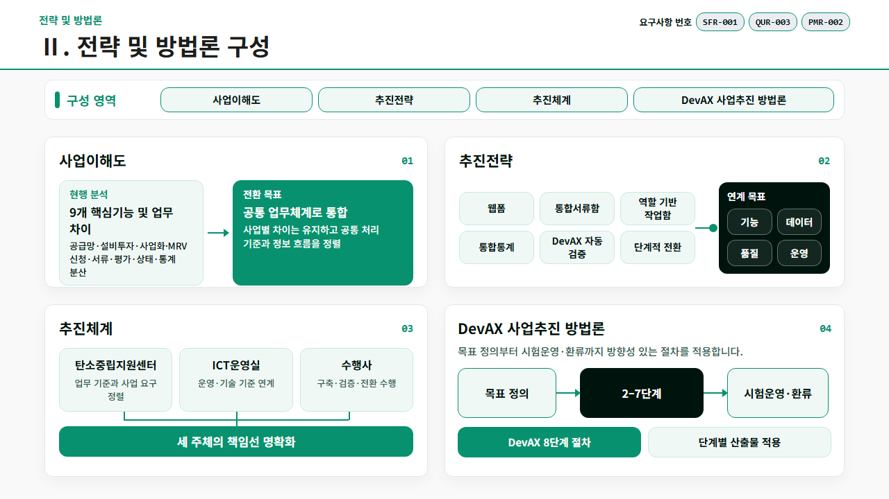
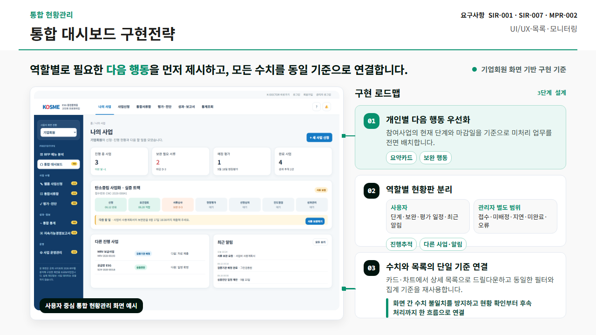
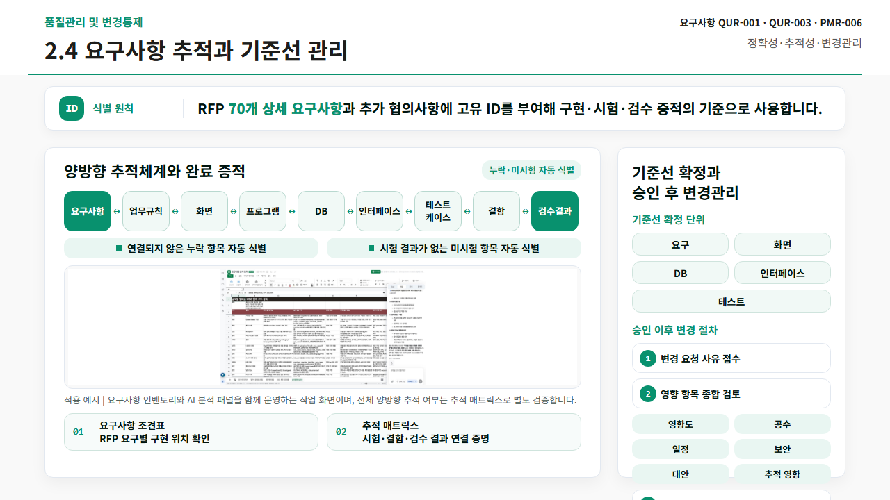
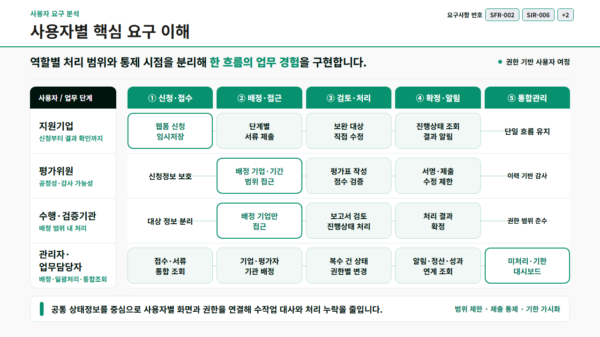
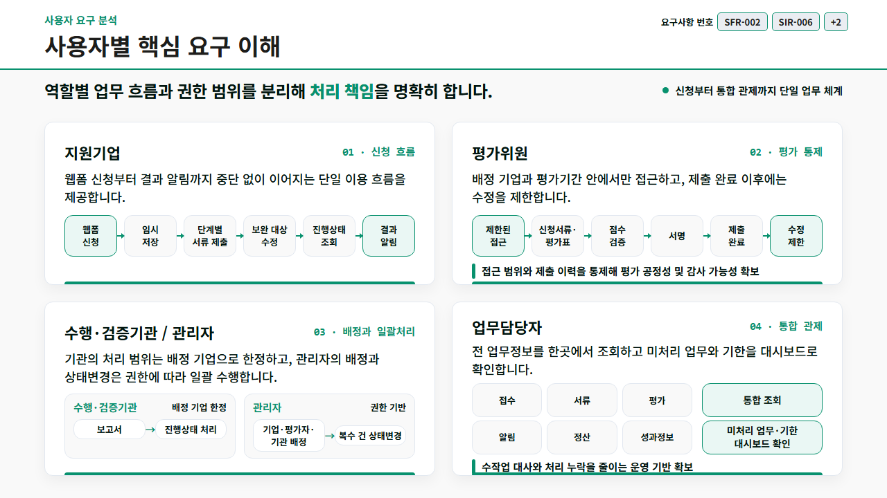
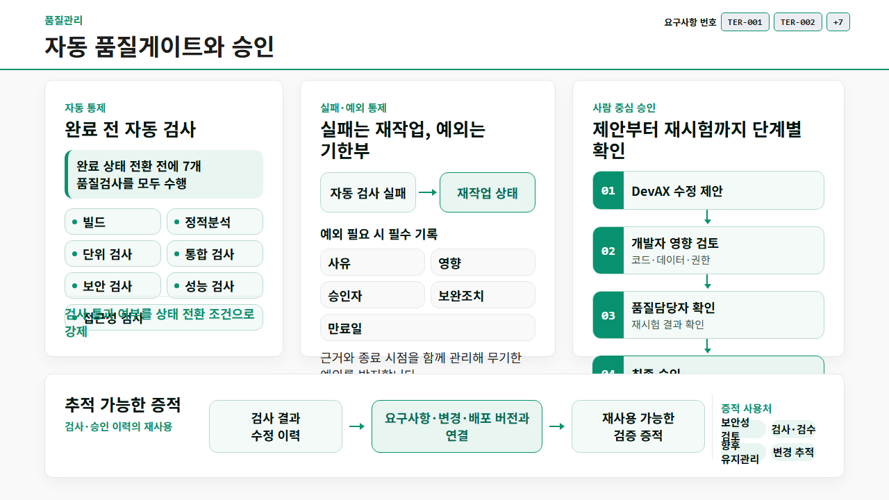
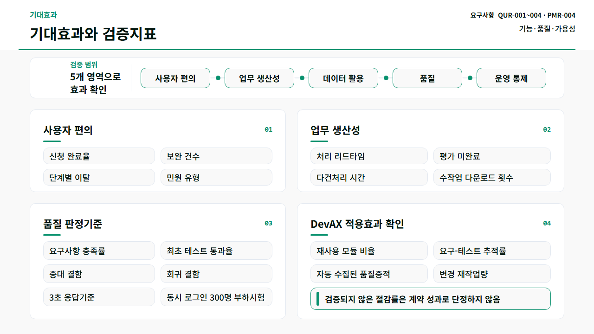
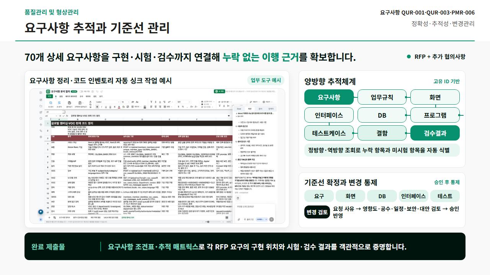

01. runs/stage1/case-01/C — 보정 변경
fit 상태 combined · 자동 blocker 0개 · 기존 내용 판정 통과 · 처리시간 15.64초


원래 모델 출력에 기존 제품 fit API와 새 containment gate를 실행했습니다. 변경된 HTML은 fit을 끈 상태로 다시 캡처했습니다. 새 LLM 호출 0회. 원래 내용 누락과 이미지 비가시성은 그대로 남을 수 있습니다.
fit 상태 combined · 자동 blocker 0개 · 기존 내용 판정 통과 · 처리시간 15.64초

fit 상태 unresolved · 자동 blocker 5개 · 기존 내용 판정 통과 · 처리시간 13.67초
fit 상태 unresolved · 자동 blocker 0개 · 기존 내용 판정 실패 유지 · 처리시간 6.98초


fit 상태 unresolved · 자동 blocker 8개 · 기존 내용 판정 실패 유지 · 처리시간 2.24초


fit 상태 unchanged · 자동 blocker 0개 · 기존 내용 판정 실패 유지 · 처리시간 1.61초


fit 상태 spacing_adjusted · 자동 blocker 0개 · 기존 내용 판정 실패 유지 · 처리시간 4.86초


fit 상태 unresolved · 자동 blocker 8개 · 기존 내용 판정 실패 유지 · 처리시간 1.81초


fit 상태 unresolved · 자동 blocker 0개 · 기존 내용 판정 실패 유지 · 처리시간 1.53초


fit 상태 unchanged · 자동 blocker 0개 · 기존 내용 판정 통과 · 처리시간 3.71초
fit 상태 unresolved · 자동 blocker 0개 · 기존 내용 판정 통과 · 처리시간 1.77초

